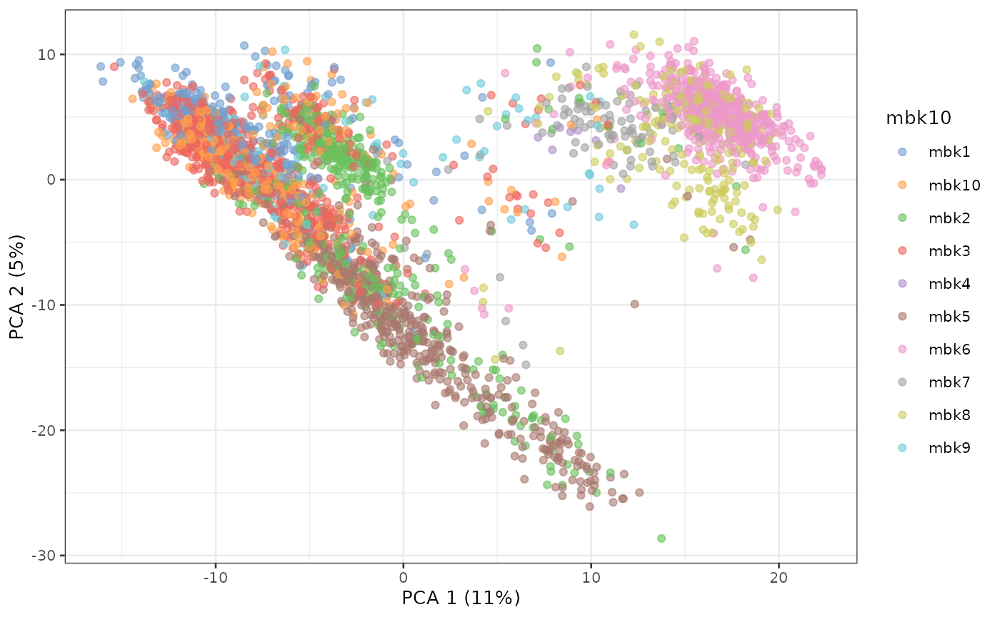
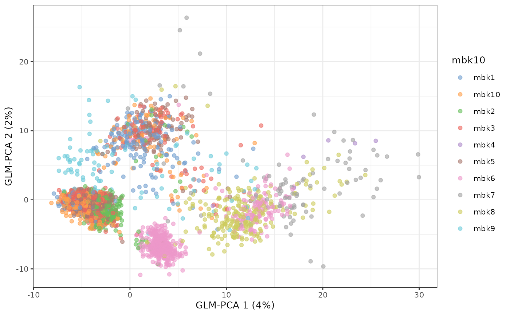
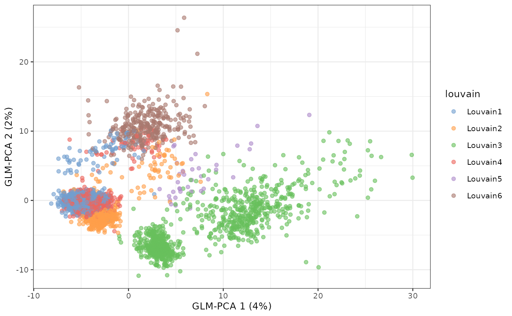
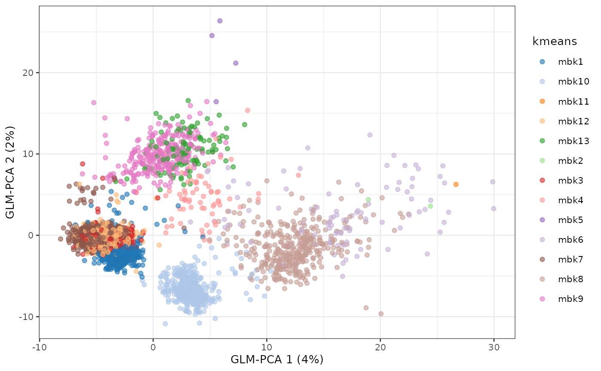
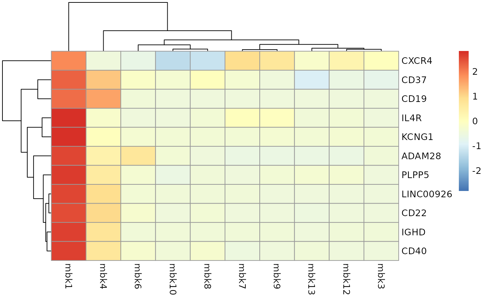

Demo.RmdIn this demo, we will showcase an end-to-end clustering pipeline, starting from the count data matrix stored in HDF5 (similar to what one would download from the HCA data portal) all the way to visualization and interpretation of the clustering results.
While we use a small-ish dataset for this demo for convenience, the code is computationally efficient even for (very) large datasets.
sce <- TENxPBMCData("pbmc4k")
sce## class: SingleCellExperiment
## dim: 33694 4340
## metadata(0):
## assays(1): counts
## rownames(33694): ENSG00000243485 ENSG00000237613 ... ENSG00000277475
## ENSG00000268674
## rowData names(3): ENSEMBL_ID Symbol_TENx Symbol
## colnames: NULL
## colData names(11): Sample Barcode ... Individual Date_published
## reducedDimNames(0):
## altExpNames(0):
counts(sce)## <33694 x 4340> matrix of class DelayedMatrix and type "integer":
## [,1] [,2] [,3] [,4] ... [,4337] [,4338] [,4339]
## ENSG00000243485 0 0 0 0 . 0 0 0
## ENSG00000237613 0 0 0 0 . 0 0 0
## ENSG00000186092 0 0 0 0 . 0 0 0
## ENSG00000238009 0 0 0 0 . 0 0 0
## ENSG00000239945 0 0 0 0 . 0 0 0
## ... . . . . . . . .
## ENSG00000277856 0 0 0 0 . 0 0 0
## ENSG00000275063 0 0 0 0 . 0 0 0
## ENSG00000271254 0 0 0 0 . 0 0 0
## ENSG00000277475 0 0 0 0 . 0 0 0
## ENSG00000268674 0 0 0 0 . 0 0 0
## [,4340]
## ENSG00000243485 0
## ENSG00000237613 0
## ENSG00000186092 0
## ENSG00000238009 0
## ENSG00000239945 0
## ... .
## ENSG00000277856 0
## ENSG00000275063 0
## ENSG00000271254 0
## ENSG00000277475 0
## ENSG00000268674 0
seed(counts(sce))## An object of class "HDF5ArraySeed"
## Slot "filepath":
## [1] "/users/shicks1/.cache/ExperimentHub/76a2184a7c59_1611"
##
## Slot "name":
## [1] "counts"
##
## Slot "as_sparse":
## [1] FALSE
##
## Slot "type":
## [1] NA
##
## Slot "dim":
## [1] 33694 4340
##
## Slot "chunkdim":
## [1] 512 66
##
## Slot "first_val":
## [1] 0In this demo we use a small dataset for the sake of running all the code in a short amount of time. However, this workflow is designed for large data and it will run just fine with any sized dataset. For instance, we have analyzed 1.3 million cells on a machine with a moderately sized RAM (e.g., 64GB).
By running the code below, you will run the workflow on the 10X Genomics 1.3 million cells dataset. (Warning: it takes some time!) Alternatively, you can substitute the code below with your own data in SingleCellExperiment format.
library(TENxBrainData)
sce <- TENxBrainData()
sceFirst, we use the scater package to compute a set of QC measures and filter out the low-quality samples.
Here, we exclude those cells that have a too high percentage of mitochondrial genes or for which we detect too few genes.
sce <- addPerCellQC(sce,
subsets = list(Mito = grep("^MT-", rowData(sce)$Symbol_TENx)))
high_mito <- isOutlier(sce$subsets_Mito_percent,
nmads = 3, type="higher")
low_detection <- (sce$detected < 1000)
high_counts <- sce$sum > 45000
sce <- sce[,!high_mito & !low_detection & !high_counts]
sce## class: SingleCellExperiment
## dim: 33694 3401
## metadata(0):
## assays(1): counts
## rownames(33694): ENSG00000243485 ENSG00000237613 ... ENSG00000277475
## ENSG00000268674
## rowData names(3): ENSEMBL_ID Symbol_TENx Symbol
## colnames: NULL
## colData names(17): Sample Barcode ... subsets_Mito_percent total
## reducedDimNames(0):
## altExpNames(0):Next, we remove the lowly expressed genes. Here, we keep only those genes that have at least 1 UMI in at least 5% of the data. These threshold are dataset-specific and may need to be taylored to specific applications.
num_reads <- 1
num_cells <- 0.01*ncol(sce)
keep <- which(DelayedArray::rowSums(counts(sce) >= num_reads ) >= num_cells)
sce <- sce[keep,]
sce## class: SingleCellExperiment
## dim: 10944 3401
## metadata(0):
## assays(1): counts
## rownames(10944): ENSG00000279457 ENSG00000228463 ... ENSG00000273748
## ENSG00000278817
## rowData names(3): ENSEMBL_ID Symbol_TENx Symbol
## colnames: NULL
## colData names(17): Sample Barcode ... subsets_Mito_percent total
## reducedDimNames(0):
## altExpNames(0):These leaves us with length(keep) genes.
Here, we apply mbkmeans (k=10 and batch size of 500) as a preliminary step to scran normalization.
set.seed(18)
mbk <- mbkmeans(sce, whichAssay = "counts", reduceMethod = NA,
clusters=10, batch_size = 500)
sce$mbk10 <- paste0("mbk", mbk$Clusters)
table(mbk$Clusters)##
## 1 2 3 4 5 6 7 8 9 10
## 329 441 708 7 505 516 89 228 96 482We then compute the normalization factors and normalize the data.
sce <- computeSumFactors(sce, cluster=mbk$Clusters, min.mean=0.1)
sce <- logNormCounts(sce)
sce## class: SingleCellExperiment
## dim: 10944 3401
## metadata(0):
## assays(2): counts logcounts
## rownames(10944): ENSG00000279457 ENSG00000228463 ... ENSG00000273748
## ENSG00000278817
## rowData names(3): ENSEMBL_ID Symbol_TENx Symbol
## colnames: NULL
## colData names(19): Sample Barcode ... mbk10 sizeFactor
## reducedDimNames(0):
## altExpNames(0):Here, we compute the first 50 principal components using the top variable genes.
sce <- scater::runPCA(sce, ncomponents = 50,
ntop = 1000,
scale = TRUE,
BSPARAM = BiocSingular::RandomParam())
plotPCA(sce, colour_by = "mbk10")
An alternative to PCA on normalized data is to use the GLM-PCA approach, implemented in the scry Bioconductor package. Here, we use the faster, approximate approach that computes the null residuals and runs PCA on them.
Other approaches implemented in Bioconductor for dimensionality reduction include correspondence analysis (in the corral package) and ZINB-WaVE (in the zinbwave and NewWave packages).
sce <- nullResiduals(sce, assay="counts", type="deviance")
sce <- scater::runPCA(sce, ncomponents = 50,
ntop = 1000,
exprs_values = "binomial_deviance_residuals",
scale = TRUE, name = "GLM-PCA",
BSPARAM = BiocSingular::RandomParam())
plotReducedDim(sce, dimred = "GLM-PCA", colour_by = "mbk10")
Here, we use the GLM-PCA results to obtain the final cluster labels. We use two alternative approaches: Louvain and mini-batch k-means.
g <- buildSNNGraph(sce, k=10, use.dimred = "GLM-PCA")
lou <- igraph::cluster_louvain(g)
sce$louvain <- paste0("Louvain", lou$membership)
table(sce$louvain)##
## Louvain1 Louvain2 Louvain3 Louvain4 Louvain5 Louvain6
## 1081 438 876 665 37 304If you want more control on the resolution of the clustering, you can use the Louvain implementation available in the resolution package. Alternatively, the leiden package implements the Leiden algorithm.
Mini-batch \(k\)-means is a faster version of \(k\)-means that uses only a random “mini-batch” of data at each iteration. The algorithm is fast enough to cluster the 1.3 million cell data in the space of the top 50 PC in under 30 seconds.
Here, we run it multiple times to select the value of \(k\) with the elbow method.
k_list <- seq(5, 20)
km_res <- lapply(k_list, function(k) {
mbkmeans(sce, clusters = k,
batch_size = 500,
reduceMethod = "GLM-PCA",
calc_wcss = TRUE)
})
wcss <- sapply(km_res, function(x) sum(x$WCSS_per_cluster))
plot(k_list, wcss, type = "b")##
## mbk1 mbk10 mbk11 mbk12 mbk13 mbk2 mbk3 mbk4 mbk5 mbk6 mbk7 mbk8 mbk9
## 393 430 1 467 114 2 233 68 4 99 953 362 275
table(sce$kmeans, sce$louvain)##
## Louvain1 Louvain2 Louvain3 Louvain4 Louvain5 Louvain6
## mbk1 1 391 1 0 0 0
## mbk10 0 0 430 0 0 0
## mbk11 0 0 1 0 0 0
## mbk12 81 0 1 385 0 0
## mbk13 0 0 0 32 0 82
## mbk2 0 0 2 0 0 0
## mbk3 0 0 0 233 0 0
## mbk4 0 46 0 0 19 3
## mbk5 0 0 0 0 0 4
## mbk6 0 0 81 0 17 1
## mbk7 951 0 0 2 0 0
## mbk8 0 1 360 0 1 0
## mbk9 48 0 0 13 0 214
plotReducedDim(sce, dimred = "GLM-PCA", colour_by = "louvain")
plotReducedDim(sce, dimred = "GLM-PCA", colour_by = "kmeans")
To interpret the 13 clusters, we start by computing a list of markers.
sce <- sce[,!(sce$kmeans %in% c("mbk11", "mbk2", "mbk5"))]
colLabels(sce) <- sce$kmeans
markers <- findMarkers(sce, pval.type="all", direction="up")
chosen <- "mbk1"
interesting <- markers[[chosen]]
interesting[1:10,1:3]## DataFrame with 10 rows and 3 columns
## p.value FDR summary.logFC
## <numeric> <numeric> <numeric>
## ENSG00000077238 2.71752e-17 2.97406e-13 0.692130
## ENSG00000211898 3.74564e-14 2.04962e-10 1.225241
## ENSG00000042980 5.15536e-12 1.88068e-08 0.511909
## ENSG00000247982 1.76128e-11 4.81885e-08 0.682113
## ENSG00000121966 2.13669e-10 4.67679e-07 0.422467
## ENSG00000147535 5.04086e-09 9.19452e-06 0.506170
## ENSG00000026559 7.33826e-09 1.14729e-05 0.194973
## ENSG00000104894 1.45849e-08 1.99521e-05 0.754678
## ENSG00000012124 9.64702e-08 1.17308e-04 0.534463
## ENSG00000101017 2.53684e-07 2.77632e-04 0.352960
top10 <- rownames(interesting[1:10,])
rowData(sce[top10,])## DataFrame with 10 rows and 3 columns
## ENSEMBL_ID Symbol_TENx Symbol
## <character> <character> <character>
## ENSG00000077238 ENSG00000077238 IL4R IL4R
## ENSG00000211898 ENSG00000211898 IGHD NA
## ENSG00000042980 ENSG00000042980 ADAM28 ADAM28
## ENSG00000247982 ENSG00000247982 LINC00926 LINC00926
## ENSG00000121966 ENSG00000121966 CXCR4 CXCR4
## ENSG00000147535 ENSG00000147535 PLPP5 PLPP5
## ENSG00000026559 ENSG00000026559 KCNG1 KCNG1
## ENSG00000104894 ENSG00000104894 CD37 CD37
## ENSG00000012124 ENSG00000012124 CD22 CD22
## ENSG00000101017 ENSG00000101017 CD40 CD40
library(pheatmap)
means <- t(apply(logcounts(sce[c(top10,"ENSG00000177455"),]), 1, tapply, sce$kmeans, mean))
rownames(means) <- rowData(sce[c(top10,"ENSG00000177455"),])$Symbol_TENx
pheatmap(means, scale = "row")
The presence of CD40, IL4R suggests that these are activated B-cells.
Similar analyses can be carried out for all clusters.
## R version 4.0.3 Patched (2020-10-27 r79384)
## Platform: x86_64-pc-linux-gnu (64-bit)
## Running under: CentOS Linux 7 (Core)
##
## Matrix products: default
## BLAS: /jhpce/shared/jhpce/core/conda/miniconda3-4.6.14/envs/svnR-4.0.x/R/4.0.x/lib64/R/lib/libRblas.so
## LAPACK: /jhpce/shared/jhpce/core/conda/miniconda3-4.6.14/envs/svnR-4.0.x/R/4.0.x/lib64/R/lib/libRlapack.so
##
## locale:
## [1] LC_CTYPE=en_US.UTF-8 LC_NUMERIC=C
## [3] LC_TIME=en_US.UTF-8 LC_COLLATE=en_US.UTF-8
## [5] LC_MONETARY=en_US.UTF-8 LC_MESSAGES=en_US.UTF-8
## [7] LC_PAPER=en_US.UTF-8 LC_NAME=C
## [9] LC_ADDRESS=C LC_TELEPHONE=C
## [11] LC_MEASUREMENT=en_US.UTF-8 LC_IDENTIFICATION=C
##
## attached base packages:
## [1] parallel stats4 stats graphics grDevices utils datasets
## [8] methods base
##
## other attached packages:
## [1] pheatmap_1.0.12 mbkmeans_1.6.1
## [3] scry_1.2.0 scran_1.18.1
## [5] scater_1.18.3 ggplot2_3.3.2
## [7] TENxPBMCData_1.8.0 HDF5Array_1.18.0
## [9] rhdf5_2.34.0 DelayedArray_0.16.0
## [11] Matrix_1.2-18 SingleCellExperiment_1.12.0
## [13] SummarizedExperiment_1.20.0 Biobase_2.50.0
## [15] GenomicRanges_1.42.0 GenomeInfoDb_1.26.0
## [17] IRanges_2.24.0 S4Vectors_0.28.0
## [19] BiocGenerics_0.36.0 MatrixGenerics_1.2.0
## [21] matrixStats_0.57.0
##
## loaded via a namespace (and not attached):
## [1] ggbeeswarm_0.6.0 colorspace_2.0-0
## [3] ellipsis_0.3.1 rprojroot_2.0.2
## [5] benchmarkme_1.0.4 scuttle_1.0.0
## [7] bluster_1.0.0 XVector_0.30.0
## [9] BiocNeighbors_1.8.1 fs_1.5.0
## [11] farver_2.0.3 bit64_4.0.5
## [13] interactiveDisplayBase_1.28.0 AnnotationDbi_1.52.0
## [15] ClusterR_1.2.2 codetools_0.2-18
## [17] sparseMatrixStats_1.2.0 doParallel_1.0.16
## [19] knitr_1.30 dbplyr_2.0.0
## [21] shiny_1.5.0 BiocManager_1.30.10
## [23] compiler_4.0.3 httr_1.4.2
## [25] dqrng_0.2.1 assertthat_0.2.1
## [27] fastmap_1.0.1 limma_3.46.0
## [29] later_1.1.0.1 BiocSingular_1.6.0
## [31] htmltools_0.5.0 tools_4.0.3
## [33] gmp_0.6-1 rsvd_1.0.3
## [35] igraph_1.2.6 gtable_0.3.0
## [37] glue_1.4.2 GenomeInfoDbData_1.2.4
## [39] dplyr_1.0.2 rappdirs_0.3.1
## [41] Rcpp_1.0.5 pkgdown_1.6.1
## [43] vctrs_0.3.4 rhdf5filters_1.2.0
## [45] ExperimentHub_1.16.0 iterators_1.0.13
## [47] DelayedMatrixStats_1.12.0 xfun_0.19
## [49] stringr_1.4.0 beachmat_2.6.1
## [51] mime_0.9 lifecycle_0.2.0
## [53] irlba_2.3.3 gtools_3.8.2
## [55] statmod_1.4.35 AnnotationHub_2.22.0
## [57] edgeR_3.32.0 zlibbioc_1.36.0
## [59] scales_1.1.1 ragg_0.4.0
## [61] promises_1.1.1 RColorBrewer_1.1-2
## [63] yaml_2.2.1 curl_4.3
## [65] memoise_1.1.0 gridExtra_2.3
## [67] stringi_1.5.3 RSQLite_2.2.1
## [69] BiocVersion_3.12.0 desc_1.2.0
## [71] foreach_1.5.1 BiocParallel_1.24.1
## [73] benchmarkmeData_1.0.4 rlang_0.4.8
## [75] pkgconfig_2.0.3 systemfonts_0.3.2
## [77] bitops_1.0-6 evaluate_0.14
## [79] lattice_0.20-41 purrr_0.3.4
## [81] Rhdf5lib_1.12.0 labeling_0.4.2
## [83] bit_4.0.4 tidyselect_1.1.0
## [85] magrittr_1.5 R6_2.5.0
## [87] generics_0.1.0 DBI_1.1.0
## [89] pillar_1.4.6 withr_2.3.0
## [91] RCurl_1.98-1.2 tibble_3.0.4
## [93] crayon_1.3.4 BiocFileCache_1.14.0
## [95] rmarkdown_2.5 viridis_0.5.1
## [97] locfit_1.5-9.4 grid_4.0.3
## [99] blob_1.2.1 digest_0.6.27
## [101] xtable_1.8-4 httpuv_1.5.4
## [103] textshaping_0.2.1 munsell_0.5.0
## [105] beeswarm_0.2.3 viridisLite_0.3.0
## [107] vipor_0.4.5